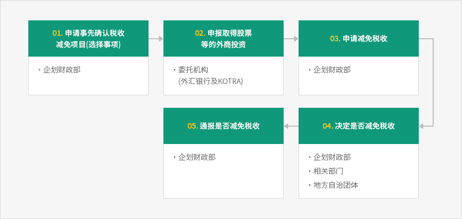
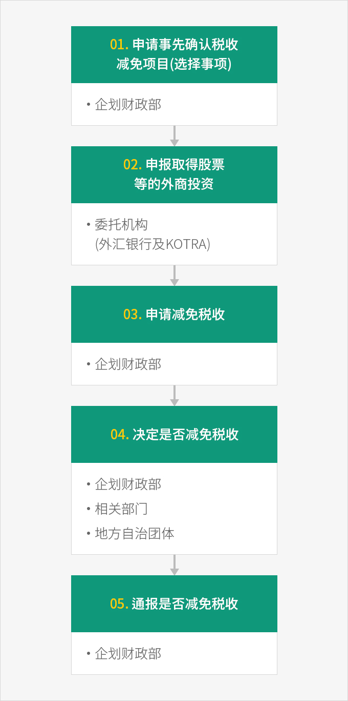

程序
- Home
- 奖励机制
- 税收减免
- 程序
外商投资企业若要享受税收减免或变更内容，必须向企划财政部长官 (或自由贸易区的自由贸易区管理负责人)提交税收减免申请。
※ 相关规定 : 《税收特例限制法》第121条第2款第6项
向企划财政部对外经济总管科(044-215-7625)提交申请书,如果外国投资商要同时申报外商投资和申请税收减免, 则应向外汇银行(委托银行)和KOTRA提交外商投资申报书和税收减免申请书。
※ 相关规定 :《税收特例限制法实施规则》第15条第3款及企划财政部第2017-10号公告, 2017.4.4. 《对外商投资税收减免规定》第5条第2项
新投资的申请期限截至营业开始日所属纳税年度结束。如需变更已享受税收减免的项目内容时, 应在变更事由发生后两年内进行变更申请。
减免税收申请程序



- 申请事先确认税收 减免项目选择事项) - 企划财政部
- 申报取得股票 等的外商投资 - 委托机构(外汇银行及 KOTRA)
- 申请减免税收 - 企划财政部
- 决定是否减免税收 - 企划财政部, 相关部门, 地方自治团体
- 通报是否减免税收 - 企划财政部

事先确认税收减免项目
外国投资商可以在申报外商投资前先申请确认是否为税收减免对象, 以作为投资参考。事先确认的效力仅限于确认是否属于税收减免适用对象, 因此需在申报投资后另行申请税收减免。※ 相关规定:《税收特例限制法》第121条第2款第7项
决定和通报税收减免
对于减免税收或变更减免税收内容的申请是否符合减免税收标准，由企划财政部长官与主务部长官和地方自治团体长官协商, 在20天内决定是否减免税收或是否变更减免内容，并通知申请人、国税厅长、关税厅长和地方自治团体长官。但可在必要时将办理时间最多延长至20天。
非减免项目决定预告通知
企划财政部长官在接到税收减免申请后欲将相应项目定为非减免对象项目时, 自申请日起20天内发出决定预告通知。申请人自收到该通知之日起20日内, 可附上申辩材料, 以书面形式申请对通知内容适当性进行核查。企划财政部长官须在接到请求之日起20日内, 决定减免与否及是否变更减免内容, 并将结果通知申请人。※ 相关规定:《税收特例限制法》第121条第2款第8项, 同法实施令第116条第3款第1-6项